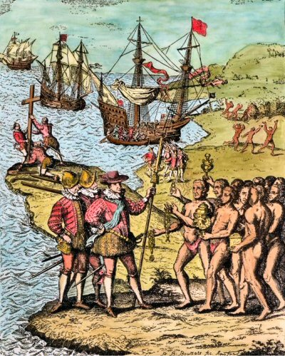

Một đốm sáng yếu ớt trong đêm tối đã chỉ rõ đất liền do đàn chim bay gợi ý trước. Chiều tối ngày thứ năm, 11 tháng 10, Colombo đứng trên chòi đuôi tàu, hơi cao hơn mũi tàu và từ đó, 10 giờ đêm, một giờ trước khi trăng mọc, Colombo đã trông thấy, hay nghĩ rằng ông đã trông thấy, một đốm sáng trong đêm tối, giống như một ngọn nến sáp nhỏ nhấp nhô như ông viết trong Nhật ký. Colombo bảo Pedro Gutiérrez nhìn và Gutiérrez cũng trông thấy ánh sáng, còn Pedro Sãnchez de Segovia không trông thấy gì từ chỗ ông đứng. Sau cuộc bàn bạc lịch sử này, tia sáng xuất hiện một hoặc hai lần rồi không trông thấy nữa.
Người ta đã nói, viết và in những bình luận, nhận xét, giải thích và tranh luận về ánh sáng này. Người ta đã gợi ý rằng toàn bộ sự kiện này là bịa đặt, đó hoàn toàn là sự đối trá. Colombo đã viết về việc trông thấy ánh sáng sau khi phát hiện ra đất liền. Mục ghi chép ngày 11 và 12 tháng 10 không tách rời nhau trong Nhật ký; vì vậy có sự nghi ngờ cho rằng Colombo đã bịa ra sự kiện này để đạt được danh vọng là người đầu tiên trông thấy đất liền, cũng như được khoản trợ cấp mười nghìn maravedis (1) hứa cho bất cứ ai phát hiện ra đất liền.
Sự nghi ngờ này không thể dễ dàng bác bỏ. Chỉ có những người điên và những kẻ chê bai thiên vị mới phủ nhận thiên tài về biển cả của con người vĩ đại ở Genova. Huyền thoại tương ứng với thực tế trong lĩnh vực này. Nhưng hoàn toàn không đúng thực tế là huyền thoại tạo ra bởi những người muốn gán cho ông tất cả những đức tính và đồng thời không thừa nhận một thiếu sót nhỏ nhất nào của ông. Những sự kiện sau này khẳng định Colombo rất có thể bịa ra những sự giả dối mà nhiều nhà sử học gán cho ông. Tuy nhiên có một chuyện đặc biệt làm cho người ta càng tin sự kiện thực tế đã xẩy ra: nhiều thủy thủ khác có nhìn thấy hiện tượng, một người trong số đó được nêu đích danh. Hình như Colombo đã lường trước những nghi ngờ và thận trọng nêu những chứng cớ thích hợp trong Nhật Ký. Nếu đó không phải là dối trá thì đó có thể là ảo giác không? Giải thích đó đã bị loại trừ sau khi thực hiện những thí nghiệm trên hiện trường. Những thí nghiệm ấy cũng loại trừ cả khả năng ánh sáng đó là từ một ngọn đuốc, ánh sáng duy nhất mà người bản xứ dùng
Chỉ còn khả năng đó là một đống lửa vì khoảng cách nên giống như một ngọn đuốc. Ruth Durlacher Wolper và tác giả cuốn sách này đã làm thí nghiệm trực tiếp và có thể khẳng dịnh rằng sự kiện Colombo miêu tả có thể xẩy ra. Tại một khoảng cách hai mươi bảy dặm biển, đúng trong điều kiện ánh trăng và khả năng có thể nhìn thấy được như những điều kiện lúc mười giờ tối 11 tháng 10 năm 1492, những đống lửa đốt lên vách đá nhìn từ những tàu của Colombo là có thể trông thấy được.

.Tại sao những người dân sống ở San Salvador đốt lửa? Câu trả lời đơn giản. Tháng mười mùa mưa kết thúc. Hồ và ao đầy nước, những côn trùng, nhất là ruồi cát nhiều không thể chịu được. Để giữ cho chúng không vào nhà ‘‘người Ấn Độ’’ đã đốt những đám lửa lớn về ban đêm ở trước những túp lều của họ - Colombo gọi họ như vậy vì nghĩ rằng ông ta đã tới những hòn đảo ngoài khơi Ấn Độ. Những cuộc khai quật khảo cổ xác minh rõ làng mạc của người Anh-điêng nằm ở đằng trước những tàu của Colombo đến từ phía Đông. Đó không phải là ánh sáng siêu nhiên như người nào đó đã nói. Tuy nhiên sự kiện này bao hàm những ý thần bí và lãng mạn. Trước hết đàn chim bay, rồi một điểm sáng nhỏ. Thế giới Mới đã tự giới thiệu mình với những người của Thế giới Củ như vậy.
Hai giờ sáng ngày 12 tháng 10, mặt trăng tuần cuối cùng ở vị trí tốt nhất để chiếu sáng bất cứ cái gì nằm trước những con tàu. Lúc này Juan Rodriguez Bermejo, từ đài cao ở mũi tàu của chiếc Pinta, đã nhìn thấy một cồn cát trắng, một cồn cát nữa nằm dịch về phía Nam một ít, và ở giữa là một khối đá đen. Lần này không còn nghi ngờ gì nữa! Đất liền! Đúng là đất liền, cách thuyền buồm sáu dặm về phía trước, lúc đó thuyền ở 74°20 Tây và 23°57 Bắc. Đó là những vách đá High Cay và Hinchingbrooke: rìa phía Đông Nam của đảo Guanahani, theo tên gọi của người Anh-điêng (indien). Colombo đặt tên cho đảo đó là San Salvador. Đảo này dài 13 dặm và rộng 6 dặm, nằm ở 24° Bắc và 74°30 Tây và có diện tích bề mặt sáu mươi dặm vuông. Nó là một bộ phận của Khối Thịnh vượng chung Bahamas, một thành viên độc lập của khối thịnh vượng chung của Anh. Giống như những đảo Bahama, San Salvador là một đảo san hô và vì thế có mặt bằng.
Điều chưa từng biết khi đổ bộ trong cuộc phát kiến vĩ đại này là đá ngầm san hô ngăn cản bao quanh toàn bộ San Salvador. Colombo quen với san hô thật, loài Corallium rubrum, thấy ở Địa Trung Hải và quần đảo Canarie. Nước Cộng hòa Genova là một thị trường lớn, một trung tâm thu thập san hô từ những vùng biển gần cũng như xa, đồng thời gia công và bán san hô. Những vách cản san hô được gọi tên như thế do một sư bất ngờ về từ nguyên, vì trong tiếng Anh, từ Coral áp dụng cho tất cả những chất hữu cơ có vôi tạo ra những vách san hô và những đảo.
Không một thủy thủ nào trong Thế giới Công giáo trước thời Colombo biết hiện tượng khác thường này. Trong cuốn Milione Morco Polo cũng không nói đến hiện tượng này. Tuy nhiên theo cuốn Nhật ký thì hình như Colombo không nhận rõ tầm quan trọng của việc nhận biết hiện tượng đó. Ông chỉ đơn giản nhận xét rằng ‘‘một vùng nông có đá ngầm vây quanh đảo’’. Ông không muốn mô tả dài dòng về biển, ông thích nói về đất liền và cư dân nhiều hơn, dù những kỳ quan của biển đó chắc chắn làm ông say mê.
Trong phạm vi vỉa san hô, nước ấm và trong, có một dãy màu sắc từ màu xanh thẫm đến màu xanh lá cây có thể thay đổi như màu lá mùa xuân. Từ mặt nước những lùm cây đước rậm rạp tiến ra biển; rễ cây chúi sâu dưới nước mặn và mặt cát tìm nước ngọt, một chất không thể thiếu để sống. Những nơi cây đước không mọc và những khu vực nhiều màu sắc như vườn cây, những cây cọ và cây thân cao mọc sát ngay bờ biển, sóng vỗ nhẹ nhàng khi nước triều lên cao. Người châu Âu chưa từng biết hiện tượng cây và rừng tiếp xúc trực tiếp với biển. Colombo viết sự yên tĩnh của nước đã cho phép có sự tiếp xúc như thế, ‘‘giống như trong một cái giếng’’. Sự yên tĩnh được bảo đảm bởi vỉa chắn san hô, trên đó sóng biển vỡ ra và trở nên yên lặng dưới tác động tiếp tục của bọt nước không ngừng biến động; sự chuyển động, màu trắng và tiếng động của biển thì vô cùng đa dạng. Lúc đó Colombo không thực sự hiểu hiện tượng vỉa chắn, nhưng kỹ xảo đi biển của ông đã giúp ông hành động như đã hiểu.
Ngay khi Colombo chắc chắn rằng cuối cùng ở phía Tây cũng có đất liền ngay trước mặt, cách khoảng sáu hải lý, ông ra lệnh cuốn buồm và đi chậm lại, hầu như không chuyển động cho đến rạng sáng. Bất cứ ai đã đi biển bằng thuyền buồm đều biết đến gần bờ trước gió thì khó khăn như thế nào, vì có nguy cơ đâm vào đá. Nhưng tại sao có đá xa đất liền như thế? Ít khi người ta thấy như vậy. Tuy nhiên có đá, mặc dù đó là một loại đá cho đến bây giờ những thủy thủ và những nhà địa lý chưa biết Colombo đã cảm thấy sự nguy hiểm và ông đã dừng.
Dưới ánh sáng ban ngày ta không thể bò qua bọt trắng tung tóe do sóng đập vào những tảng đá. Giống như một cái khung của bức tranh, vỉa ngăn cách bao quanh toàn bộ đảo San Salvador. Ngoài khơi đảo High Cay. Hinchingbrooke Rocks và Low Cay - ba đảo đá nhỏ hình thành mũi phía Đông Nam của đảo San Salvador – vỉa san hô chạy song song với bờ biển, vỡ thành một hình quạt vuông góc với bờ biển, buộc những người đi biển phải đi vòng mũi đất ra biển và Colombo đã đi như thế. Đến gần bờ biển phía Tây, Colombo chợt thấy một khoảng trống trong vỉa san hô và ba chiếc tàu đi qua khoảng trống đó tới bờ biển Viên Đô đốc - lúc này Colombo đã đạt được danh hiệu ông đã từng thèm khát. - đi vào bờ, trong chiếc thuyền có vũ trang cùng với hai người Pinzón. Ông bước lên cát trắng mịn, hôn cát, ngước mắt nhìn lên trời, cảm ơn Chúa và khóc. Khóc vì xúc động và vui sướng. Các thuyền trưởng Genova và Tây Ban Nha cũng khóc trước một đám đông những đàn ông và đàn bà trần truồng và sợ hãi, - tiếng khóc đó đã tổng kết ý nghĩa nổi bật của cuộc gặp gỡ bất ngờ quan trọng nhất trong lịch sử loài người. Gặp gỡ bất ngờ, chính xác hơn là phát kiến, vì không phải nhân loại phát hiện ra một vùng đất mới, không có người, mà là hai bộ phận nhân loại, hai Thế giới đến với nhau vào sáng hôm đó, trên đảo Guanahani - San Salvador. Viên Đô đốc mở tung lá cờ Hoàng gia và anh em Pinzon mở hai lá cờ có hình chéo xanh lá cây, một mang chữ F (Ferdinando) và chiếc kia mang chữ Y (Ysabel).
Viên Đô đốc triệu tập Rodrigo de Escobedo, thư ký của đoàn thuyền, và Pedro Sánchez de Segovia, một thủy thủ, và bảo họ xác nhận và chứng kiến ông đang chiếm hữu và thực tế đã chiếm hữu đảo cho Vua và Hoàng hậu như thế nào trước mặt họ. Những quy ước thích hợp sẽ được viết ra.
Sau nghi lễ cuộc gặp tiến hành. Hai Thế giới cho đến lúc đó chưa biết nhau đã trở nên quen biết. Rủi ro họ không hiểu nhau. Đây là ấn tượng đầu tiên của cuộc gặp gỡ: ‘‘Ngay tức khắc họ trông thấy những người trần truồng’’. Một thực tế đập ngay vào mắt họ, câu viết đó không mang ý nghĩa giới tính; nó chỉ biểu thị sự ngạc nhiên. "Tất cả họ đều trần truồng như khi mẹ họ sinh, ngay cả những người phụ nữ, và một trong những người đó rất trẻ. Nhưng tất cả những người tôi trông thấy đều trẻ vì tôi không trông thấy người nào quá ba mươi tuổi và tất cả họ đều cân đối, với một cơ thể đẹp và một diện mạo duyên dáng. Họ có tóc thô. Giống như một bờm ngựa, cắt ngắn và xõa xuống mắt, trừ một túm hất ra đằng sau và để mọc dài, không bao giờ cắt. Một số người sơn thân họ màu xám (màu của những người trên đảo Canarie, không đen và cũng không trắng), những người khác sơn trắng, đỏ, hoặc màu khác nữa. Một số người sơn mặt, những người khác sơn toàn thân, hoặc chỉ đôi mắt, hoặc mũi.
Họ không mang vũ khí và cũng chẳng biết về vũ khí. Tôi chỉ cho họ những thanh kiếm, họ cầm những thanh kiếm đó đằng lưỡi vì không biết và bị đứt tay. Họ không có một loại sắt nào cả. Những cái giáo của họ là những chiếc gậy không có sắt; chỉ một số cái có răng cá ở đầu.
Tôi thấy một số người mang những dấu vết vũ khí trên mình họ và tôi ra hiệu hỏi họ đó là những gì. Họ làm cho tôi hiểu rằng, từ những đảo khác ở lân cận, người ta thường đến bắt họ và họ tự bảo vệ mình. Tôi tin và biết rằng những người từ đất liền đến đây bắt họ làm nô lệ. Họ phải là những đầy tớ tốt và thông minh; Họ nhắc lại ngay những lời tôi nói với họ và tôi tin rằng họ rất dễ trở thành những người Công giáo, vì hình như họ không thuộc giáo phái nào. Nếu hợp ý muốn của Chúa Trời thì khi rời nơi đây tôi sẽ mang theo sáu người này cho Bệ hạ, để họ có thể học nói như chúng ta.
Đó là những ấn tượng của ngày đầu tiên. Vào ngày thứ hai Colombo nói rằng ông quan tâm trước hết đến việc tìm hiểu xem kiếm vàng ở đâu. Ông nhận thấy rằng một số người Anh-diêng đeo một miếng vàng nhỏ qua một lỗ đùi ở mũi. Họ nói với ông - hay ông hiểu như vậy - rằng đi thuyền về phương Nam, ông sẽ thấy một ông vua có những tàu lớn và rất nhiều cục vàng. Viên Đô đốc muốn một trong những người Anh-điêng dẫn ông ta đi đến xứ sở may mắn đó, nhưng ông nhận thấy họ từ chối đi với ông.
Như thế là cả hai bên đã bắt đầu hiểu lầm nhau Cái cân giá trị của người châu Âu khác cân giá trị của những người bản xứ. Họ cho mọi thứ họ có là nhỏ, không đáng kể; rõ ràng một cái nhỏ trên cán cân của người châu Âu lại không phải như thế đối với người bản xứ. Đối với họ "một mảnh sành vỡ, hay một chén thủy tinh vỡ" đáng giá "mười sáu cuộn chỉ bông". Colombo cảnh cáo rằng việc đó không bao giờ được làm, vì từ việc buôn bán không hạn chế giữa hai khả năng trí tuệ, hai khái niệm giá trị sẽ dẫn đến kết quả bất công nghiêm trọng. Vì vậy ông lập tức cấm việc buôn bán bông, không cho phép một người nào mua bông và hoàn toàn dành việc mua đó cho nhà vua Tây Ban Nha. Một điều cấm chính đáng không dễ để ra cho chín mươi người. Sức mạnh nào có thể cần có khi chín trăm, chín nghìn, hoặc chín chục nghìn người Âu sẽ đến? Đó là những rắc rối đầu tiên trong một cuộc gặp gỡ bất ngờ giữa hai Thế giới không hiểu nhau.
Ngày chủ nhật, 14 tháng 10, viên Đô đốc đi thuyền dọc theo bờ biển của đảo và thăm những làng mạc. Một số người bản xứ mang nước, những người khác mang thức ăn và còn những người khác lao mình ra biển và hỏi ra để gặp đoàn thuyền. Colombo viết: "Chúng tôi hiểu, họ tin là chúng tôi từ trên trời xuống." Những người Tây Ban Nha được tiếp đón như những vị thần. Viên Đô đốc cảm động đến nỗi trong khi tìm kiếm một nơi để xây dựng một pháo đài, ông ghi trong Nhật ký-
"Rằng không cần thiết xây dựng một pháo đài vì những người này rất chất phác trong hành động vũ trang, như Bệ hạ sẽ có thể xét từ bảy người tôi ra lệnh lấy, để mang họ về Tây Ban Nha, dạy họ nói tiếng của chúng ta, rồi đưa họ trở lại nhà họ.
Ông viết thêm:
"Nếu Bệ hạ ra lệnh đưa tất cả ho về Castiglia, hoặc giữ họ làm nô lệ trên đảo của họ thì việc đó có thể thực hiện một cách dễ dàng, vì với khoảng năm mươi người, ta có thể kiểm soát và khuất phục tất cả bọn họ, bắt họ làm bất, cứ điều gì ta muốn’’.
Capitivos có nghĩa là nô lệ. Khó cho nó một giải thích rộng lượng hơn. Colombo sống trong thời đại của ông, là một người của thời đại ông, suy nghĩ như những nhà lãnh đạo - và những người khác - của thời đại ông mà không giống như vị một thánh.
Chú thích:
(1). Gần khoảng 500 đô la ngày nay (T.G).